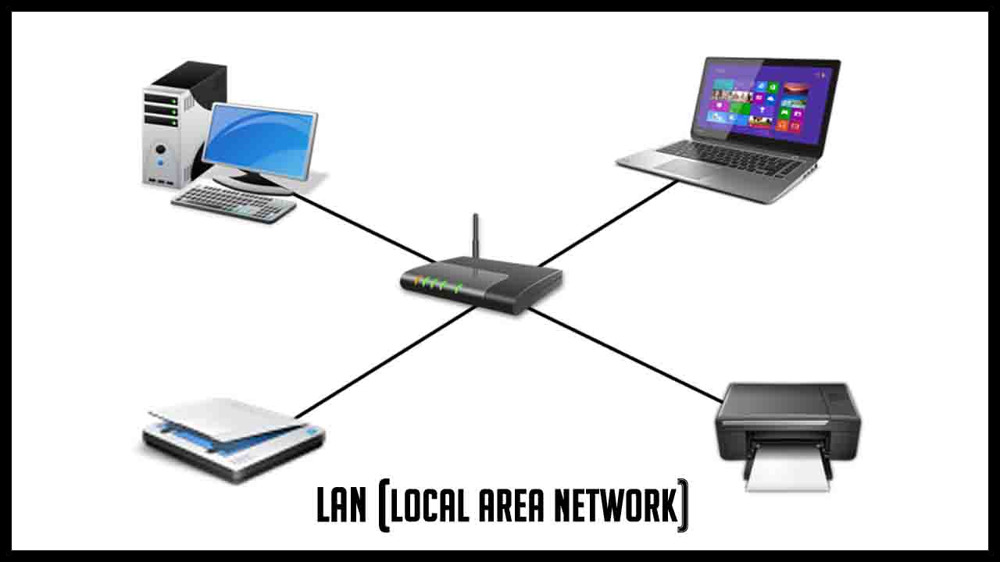
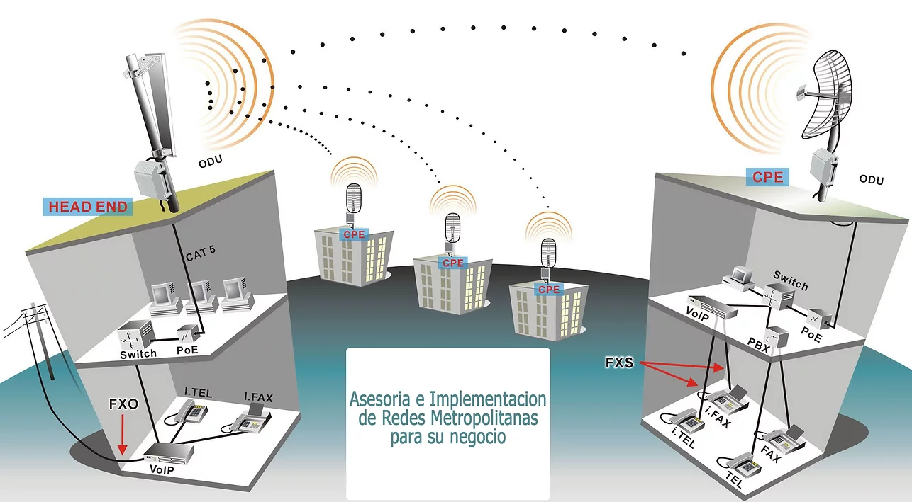
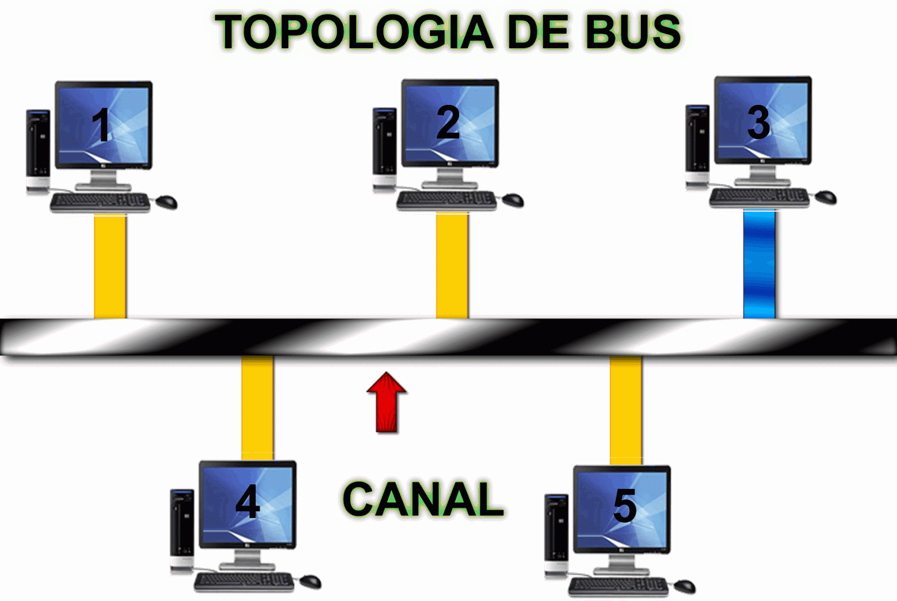
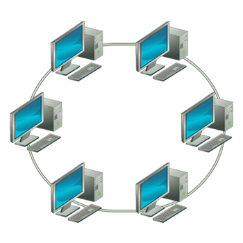
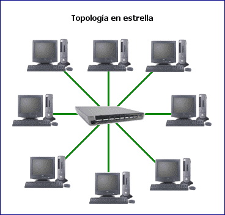

SISTEMA DE REDES
Es un software que permite la interconexión de ordenadores para poder acceder a los servicios y recursos, hardware y software, creando redes de computadoras. Al igual que un equipo no puede trabajar sin un sistema operativo, una red de equipos no puede funcionar sin un sistema operativo de red. Consiste en un software que posibilita la comunicación de un sistema informático con otros equipos en el ámbito de una red.
¿QUE ES UNA RED?
Una red informática esta formada por conjuntos de ordenadores interconectado entre si que utiliza distintas tecnología de software o hardware.
OBJETIVO DE LAS REDES
Es decir el objetivo básico es compartir recursos, es decir hacer que todos los programas, datos y equipos estén disponibles para cualquiera de la red que lo solicite, sin importar la localización del recurso y del usuario. Un segundo objetivo es proporcionar una alta fiabilidad, al contar con fuentes alternativas de suministro. Todos los archivos podrían duplicarse en dos o tres máquinas, de tal manera que si una no se encuentra disponible, podría utilizarse algunas de las copias. La presencia de múltiples CPU significa que si una de ellas deja de funcionar, las otras pueden ser capaces de encargarse de su trabajo, aunque se tenga un rendimiento global menor. Otro objetivo es el ahorro económico. Las grandes máquinas tienen una rapidez mucho mayor. Una red de computadoras puede proporcionar un poderoso medio de comunicación entre personas que se encuentran muy alejadas entre sí. Con el empleo de una red es relativamente fácil para dos personas, que viven en lugares separados, escribir un informe juntos.
Red LAN o local
Características de la red LAN:
1- Interconexión Local de una o varias computadoras y periféricos.
2- Su capacidad de funcionamiento es limitada (200 m en edificios u oficinas)
3- Puede alcanzar 1 km de distancia utilizando repetidores.
4- Mantienen la red en forma privada y con un ancho de banda.
5- Comparte hardware y software.
6- Utiliza una sola conexión telefónica o de ancho de banda para todas las computadoras conectadas en la red.

Red man o metropolitana
Características :
Maneja ancho de banda.
Su medio de transmisión es mediante la Fibra óptica, microondas y par de cobre.
esta red puede ser pública o privada.
Maneja interconexión de operador a operador y de redes locales (LAN) Utiliza algunos dispositivos para su funcionamiento: modem, routers, repetidores, etc.
Cada computador requiere de hardware para recibir y transmitir información.
Permiten transmisión de voz, video y datos.

Red pan o personal
Características :
Permite el acceso constante de los usuarios a través de los diferentes dispositivos que prestan el servicio de internet.
Su conexión se presta de manera inalámbrica.
Se fija como una de las más novedosas y grandes perspectivas en la tecnología.

Red de bus
Red cuya topología se caracteriza por tener un único canal de comunicaciones (denominado bus, troncal o backbone) al cual se conectan los diferentes dispositivos. De esta forma todos los dispositivos comparten el mismo canal para comunicarse entre sí.

Red en anillo
Topología de red en la que cada estación está conectada a la siguiente y la última está conectada a la primera. Cada estación tiene un receptor y un transmisor que hace la función de repetidor, pasando la señal a la siguiente estación.

Red de estrella
Una red en estrella es una red en la cual las estaciones están conectadas directamente a un punto central y todas las comunicaciones se han de hacer necesariamente a través de este. Los dispositivos no están directamente conectados entre sí, además de que no se permite tanto tráfico de información.